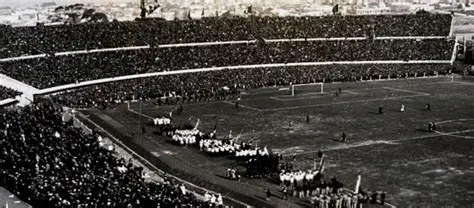
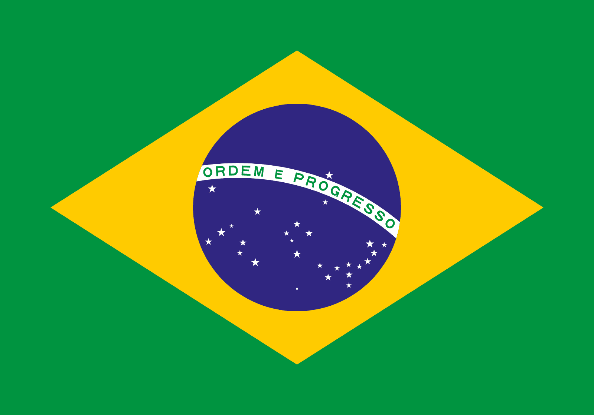
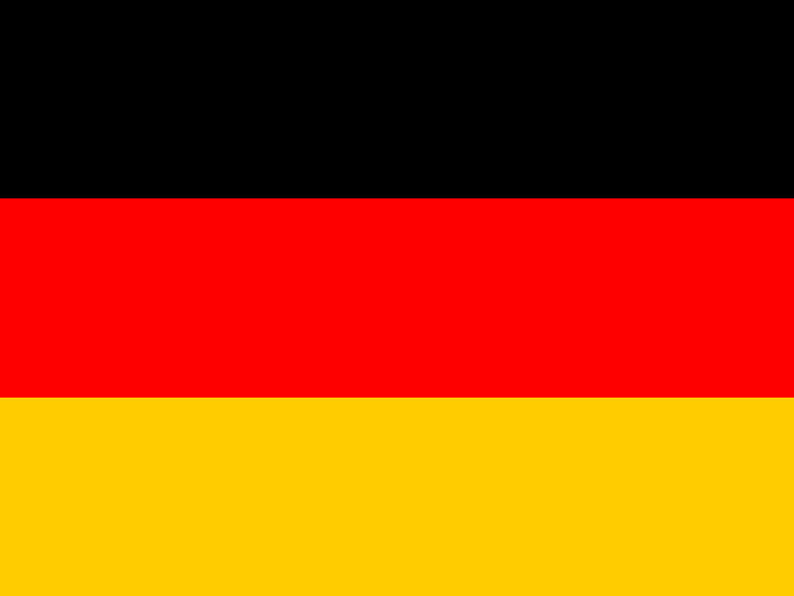
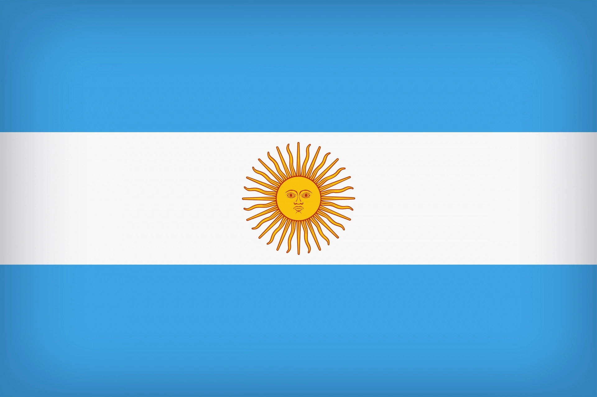
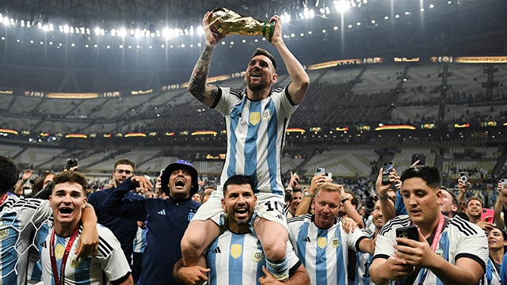
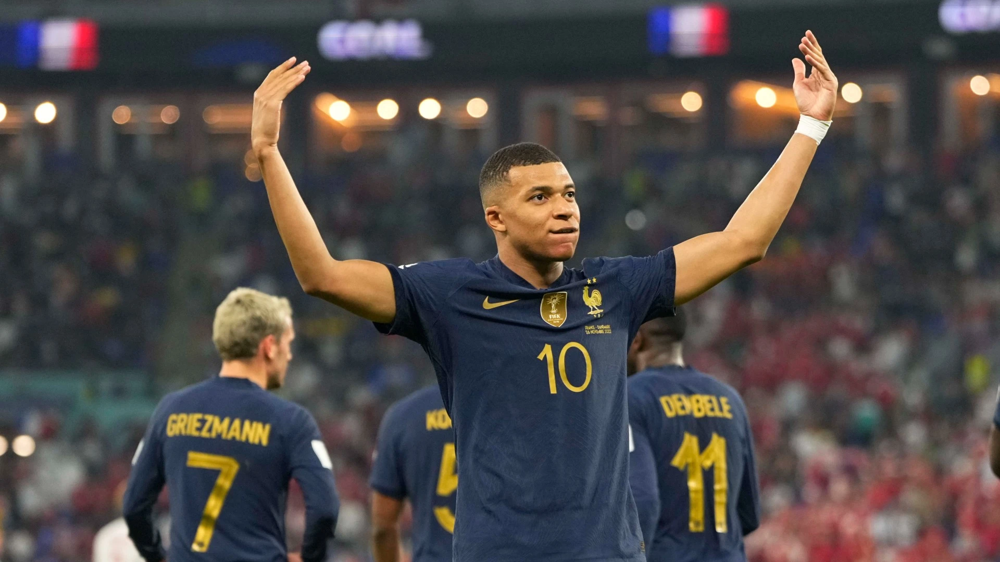
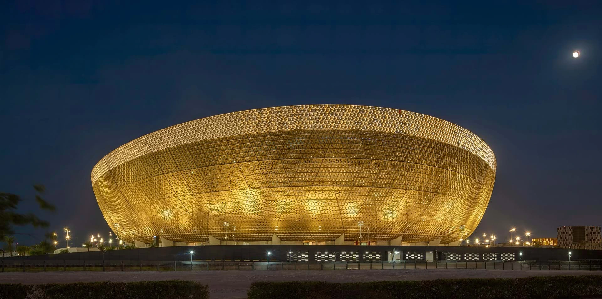

El evento deportivo más grande del planeta. Donde las naciones se detienen y la historia se escribe con un balón.
Desde 1930 hasta la actualidad, el torneo más grande del planeta
El primer Mundial de Fútbol se celebró en Uruguay 1930, con 13 equipos participantes y la selección local como campeona. Desde entonces, el torneo ha crecido hasta convertirse en el evento deportivo más visto del mundo.
Con 32 selecciones (y a partir de 2026 serán 48), la Copa del Mundo ha sido escenario de hazañas inolvidables: el Maracanazo, la mano de Dios, los títulos de Pelé, Maradona, Zidane y Messi.
El último campeón es Argentina, que levantó la copa en Qatar 2022 tras una final épica contra Francia.

Selecciones que han escrito la historia dorada del fútbol

5 títulos
Años: 1958, 1962, 1970, 1994, 2002
Leyendas: Pelé, Ronaldo, Ronaldinho, Romário.

4 títulos
Años: 1954, 1974, 1990, 2014
Leyendas: Beckenbauer, Matthäus, Klose, Lahm.

3 títulos
Años: 1978, 1986, 2022
Leyendas: Maradona, Messi, Kempes, Batistuta.
Cifras que marcan la grandeza del torneo
Miroslav Klose (Alemania) es el máximo anotador de las copas mundiales.
Pelé (Brasil) es el único futbolista en ganar tres ediciones como jugador.
Brasil es la única escuadra que ha competido en absolutamente todos los mundiales.
Imágenes que capturan la emoción del Mundial

Lionel Messi finalmente alza la Copa del Mundo en Lusail.

Kylian Mbappé, joven estrella del título galo.

Estadio Lusail, escenario de una final legendaria.